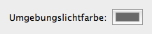
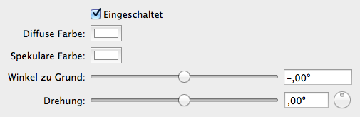

Sie können die Beleuchtung in GLLara frei konfigurieren. Dazu gibt es zwei Arten von Lichtern: Ein allgemeines Umgebungslicht und drei gerichtete diffuse Lichtquellen.
All diese können sie im Dokumentenfenster konfigurieren.

Das Umgebungslicht beleuchtet alle Teile der Szene gleichmäßig und ist damit insbesondere für die Helligkeit von Objekten im Schatten verantwortlich. Sie müssen nur die Farbe einstellen. Hellere Farben ergeben eine hellere Szene. Über die Tönung können sie verschiedene Stimmungen erreichen.

Die drei diffusen Lichtquellen stellen die Hauptbeleuchtung der Szene dar. Bei einem neuen Dokument ist nur eine davon eingeschaltet. Sie können einstellen, aus welcher Richtung sie leuchten, und die Farben.
Die wichtigere Farbe ist die diffuse Farbe. Diese gibt die allgemeine Beleuchtung wieder. Die spekulare Farbe bestimmt das Aussehen des Glanzes. Dabei glänzen nicht alle Objekte. Sie können dies bei den Meshes einstellen.